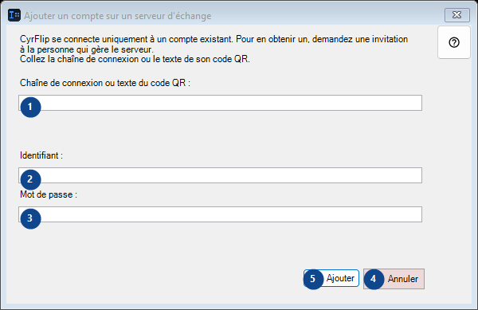
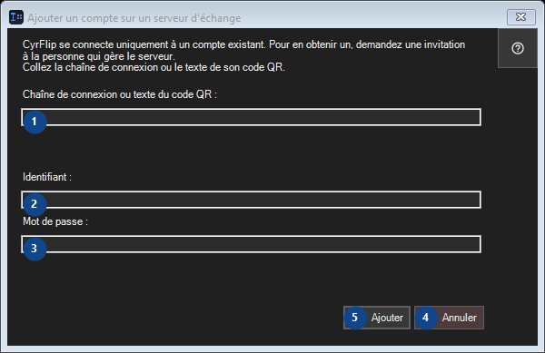

Ajouter un compte sur un serveur d'échange
À quoi cela sert
Transmettez ce que vous avez copié à vos autres appareils via votre propre serveur d'échange.


Ordre des actions
Lisez les explications numérotées, choisissez les valeurs voulues, puis continuez avec la commande de la fenêtre.
Éléments
1. CyrFlip se connecte uniquement à un compte existant. Pour en obtenir un, demandez une invitation à la personne qui gère le serveur. Collez la chaîne de connexion ou le texte de son code QR.
Choisissez ou saisissez la valeur indiquée par le libellé voisin. Vérifiez-la avant de continuer.
Vos raccourcis2. CyrFlip se connecte uniquement à un compte existant. Pour en obtenir un, demandez une invitation à la personne qui gère le serveur. Collez la chaîne de connexion ou le texte de son code QR.
Choisissez ou saisissez la valeur indiquée par le libellé voisin. Vérifiez-la avant de continuer.
Vos raccourcis3. CyrFlip se connecte uniquement à un compte existant. Pour en obtenir un, demandez une invitation à la personne qui gère le serveur. Collez la chaîne de connexion ou le texte de son code QR.
Choisissez ou saisissez la valeur indiquée par le libellé voisin. Vérifiez-la avant de continuer.
Vos raccourcis4. Annuler
Utilisez cette commande pour l’action indiquée. Lisez toute confirmation avant de l’accepter.
Vos raccourcis5. Ajouter
Utilisez cette commande pour l’action indiquée. Lisez toute confirmation avant de l’accepter.
Vos raccourcis